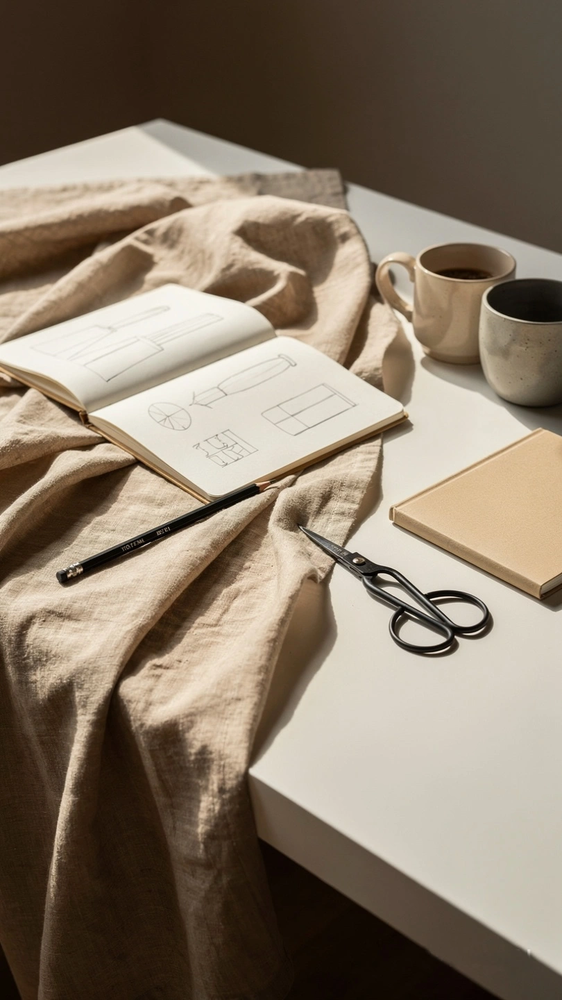
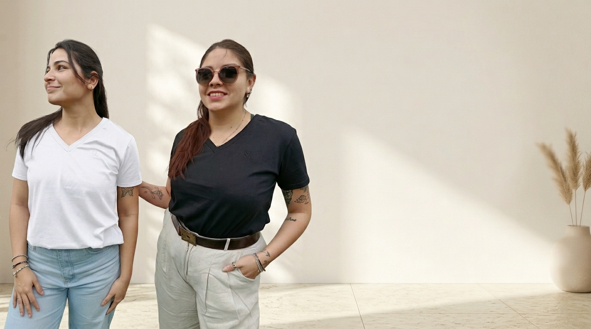

Samira Lodi nace desde la búsqueda de prendas femeninas, versátiles y auténticas, pensadas para acompañar a mujeres que saben quiénes son.
La marca combina minimalismo, sastrería y diseño consciente para crear piezas de líneas limpias, cómodas y duraderas.

La identidad de la marca se construye desde la calidad, los talles reales, las siluetas puras y la intención de crear prendas que trasciendan las temporadas.
Cada colección busca transmitir equilibrio entre feminidad, funcionalidad y sofisticación, priorizando siempre la autenticidad por encima de las tendencias pasajeras.

Samira Lodi es Diseñadora de Indumentaria, recibida en el año 2010, con una formación orientada al diseño consciente, la construcción de colección y la calidad real de cada prenda.
A lo largo de su recorrido profesional continuó especializándose en distintas áreas vinculadas al desarrollo integral de marca, la confección y la estructura técnica de las prendas.
Formación realizada junto a la Diseñadora Cristina Quiroga Pellet.
Especialización junto al Diseñador Marcelo Serna, diseñador de Cardón.
Formación junto a la Diseñadora Silvia Hatchabalet.
Especialización realizada junto a la Diseñadora Silvia Herrera.
La identidad de Samira Lodi nace desde la unión entre técnica, sensibilidad estética y una mirada enfocada en crear prendas atemporales, femeninas y funcionales para mujeres reales.
Samira Lodi busca consolidarse como una marca enfocada en diseño minimalista y calidad real, creando una experiencia visual y estética coherente, elegante y cercana.
La propuesta está dirigida a mujeres seguras, auténticas y conscientes de su estilo, que buscan prendas capaces de expresar personalidad sin exceso.